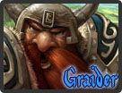

Graider
Age : 128
Sexe : Homme
Race : Nain
Faction : Alliance
Formation : Paladin
Description : *Le barde se dirige vers le comptoir, s'assoit et entame une douce mélodie, parcourant son luthe de ses doigts agiles et fins. Il commence alors à chanter*
Oyez, Oyez l'histoire d'un noble paladin nain,
Nommé Graider IronFist et sans égale destin,
*Sous l'oeil atentif de son public, il commence à conter*
Né dans les hautes montagnes occidentale de Dun Morog, dernier enfant de Tsume et Siane IronFist, il grandit comme tout bon petit frère, en perpetuelle compétitionavec son aîné Gaultier.
Avec son pére ancien paladin et sa mère ancienne prêtresse, on peut dire que Graider et Gaultier ont grandit dans la Lumière et ses Valeurs, et comme tout bon Mâle de la famile des IronFist, Gaultier, suivi quelques années plus tard par Graider, devinrent écuyés dans l'ordre des chevaliers de la main d'argent. Très vite Gaultier gravit les échellons de l'ordre, c'était un génie et un fervant défenseur de la Lumière. Malheureusement tout ne se passait pas aussi bien pour son cadet Graider, plus adepte des Tavernes que du nettoyage des armures. Bien que sa progression fut lente et fastidieuse il devint enfin Paladin.
*Le barde sort quelques note agréable de son instrument*
Mais tous ses efforts furent vite balayé à la vu de son aîné promu instructeur.
Mais il ne baissa pas les bras.
*la mélodie redouble de panache*
Redoublant d'effort pour aider son prochain, multipliant les exploits au nom de la Lumière.
*le barde commence une courte chansson*
Du grand Van Cleef,
Au féroce Hogger,
Il n'y a pas plus expéditif,
Que le grand Graider
*Il s'arrete et continue son histoire d'un ton grave*
Mais à la suite d'une sainte quête, il fut mis sous fer pas l'inquisition, corps secret de la cathédrale de la Lumière, leur role est de surveiller l'intérieur de nos forces et de débusquer les possibles graines de l'hérésie.
*Il s'arrete un instant pour contempler son public resté bouche bée après cette nouvelle, puis il reprend sur des notes plus douces*
Nul ne su sa destination, mais au bout de deux semaines on le vit arpenter les Carmines, le sourire aux lèvres, toujours à aider son prochain.
Plus tard on apprit son renvoie de l'ordre, mais il s'en souçiait peu, car malgré tout il restait fidèle à la Lumière.
*Il ralentit le rythme de son luthe*
Depuis les aventures se sont accumulées,
et de nouveaux compagnons rencontrés,
Dans ce triste monde austère et désolée,
où aux sons des tambours résonne une guerre enragée.
*Le barde entame alors une mélodie fantastique mélant songe et mystère*
Mais ce qui reste encore un mystère,
Connue seulement de ses compères,
C'est la triste raison,
De son arrestation.
*Le barde s'incline alors pause son couvre chef sur le rebord du comptoir pour les éventuels donnateur, se retourne et commande un lait de chèvre, se retourne une dernière fois*
A votre bon coeur messieurs dames, je vous raconterais peut etre la suite, quelques unes de ses aventures et de ses rencontres, où peut etre bien la voie qu'il décida de suivre au seins d'un groupe de mercenaire
*se retourne et bois son lait de chèvre*
Plus d'infos sur Graider >>>Lire le récit de Graider >>>